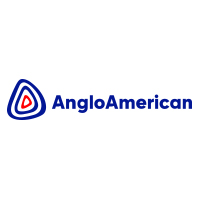
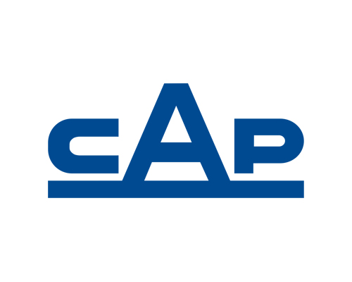
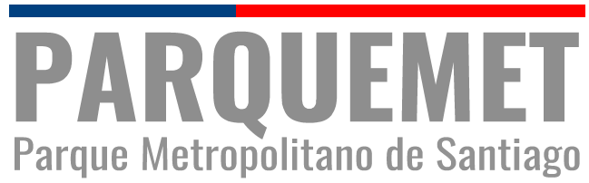
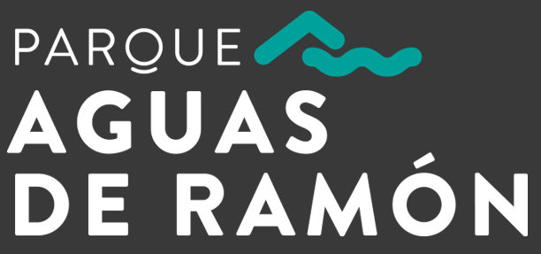
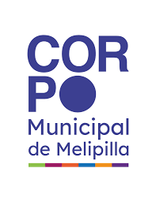
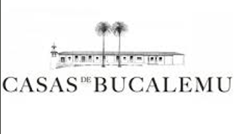

Levantamiento Vertedero Municipal – 140 hectáreas
Levantamiento topográfico integral para planificación territorial.
Proyecto Jaula Tigre Blanco
Levantamiento técnico de precisión para infraestructura especializada.
Levantamiento de Alta Precisión
Control topográfico aplicado a infraestructura vial.
Soprocal · Anglo American · CAP
Levantamientos para montaje de piezas especiales en entornos industriales.
Aplicamos protocolos de levantamiento con control de precisión, respaldo digital y procesamiento de datos bajo estándares profesionales.
Uso de estación total, GNSS y software especializado para garantizar exactitud en cada proyecto.
Coordinación con arquitectos, ingenieros y equipos municipales para ejecución eficiente en terreno.
Informes técnicos detallados, planos digitales y respaldo documental completo.
Hemos desarrollado proyectos en diversas regiones del país.





